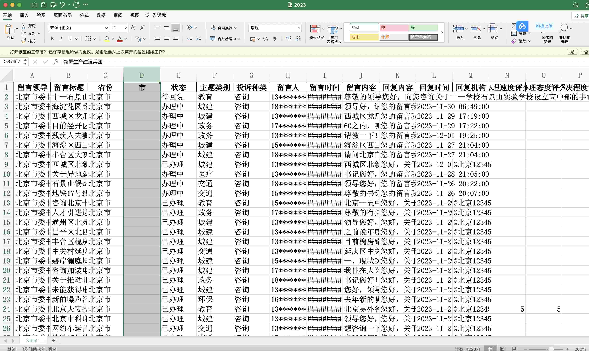
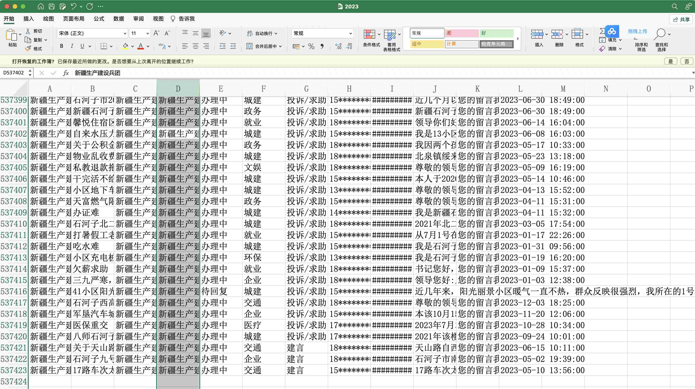
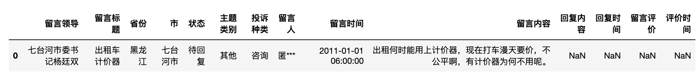
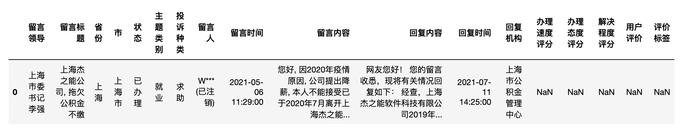
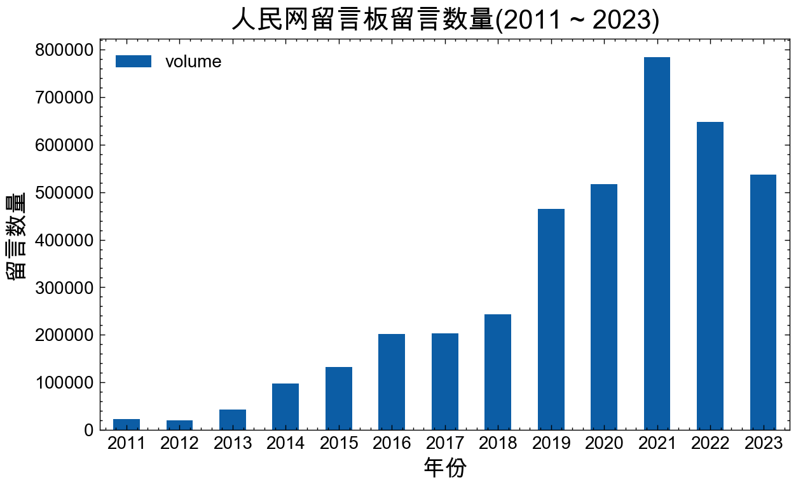

一、数据集
1.1 概况
数据来源: 人民网地方领导留言板
覆盖时间: 2011-01-01 ~ 2023.12.06
记录条数: 3914385
文件格式: xlsx、csv
所含字段:
- 留言领导
- 留言标题
- 省份
- 市
- 状态
- 主题类别
- 投诉种类
- 留言人
- 留言时间
- 留言内容
- 回复内容
- 回复时间
- 回复机构
- 办理速度评分(该字段出现在2019之后)
- 办理态度评分(该字段出现在2019之后)
- 解决程度评分(该字段出现在2019之后)
- 用户评价(该字段出现在2019之后)
- 评价标签(该字段出现在2019之后)
1.2 相关研究
[1]郑石明, 兰雨潇, 黎枫. 网络公共舆论与政府回应的互动逻辑——基于新冠肺炎疫情期间“领导留言板”的数据分析[J]. 公共管理学报, 2021, 18 (03): 24-37+169.
王磊,易扬.公共卫生危机中的数字政府回应如何纾解网络负面舆情——基于人民网“领导留言板”回复情况的调查[J].公共管理学报,2022,19(04):65-78+169.
[2]Lu, Liangdong, Jia Xu, and Jiuchang Wei. "Understanding the effects of the textual complexity on government communication: Insights from China’s online public service platform." Telematics and Informatics 83 (2023): 102028.
...
1.3 获取数据
1. 付费数据集，2000元，支持开票；加微信 372335839， 备注「姓名-学校-专业」。
2. 数据是虚拟产品，一经售出，不再退还！
3. 大家时间其实都很宝贵，请仔细阅读推文内容， 确认无误再加微信详谈购买事宜


二、查看数据
2.1 读取数据
依次读取2011-2019.csv.gz 和 2020-2023.csv.gz 两个csv文件， .csv.gz 解压得到 .csv 后再读取。
import pandas as pd
df11_19 = pd.read_csv('2011-2019.csv')
#df11_19 = pd.read_csv('2011-2019.csv.gz', compression='gzip')
df11_19.head(1)

df20_23 = pd.read_csv('2020-2023.csv')
#df20_23 = pd.read_csv('2020-2023.csv.gz', compression='gzip')
df20_23.head(1)

2.2 字段
10多年的时间，网站会变动，写爬虫运行爬虫的人也会变动。为了让大家更丝滑的使用数据，大邓对所有的年份进行了字段矫正和统一， 最后字段只有两大类，
print('2011-2019')
print(df11_19.columns)
print('\n')
print('2020-2023')
print(df20_23.columns)
Run
2011-2019
Index(['留言领导', '留言标题', '省份', '市', '状态', '主题类别', '投诉种类', '留言人', '留言时间', '留言内容', '回复机构',
'回复内容', '回复时间', '留言评价', '评价时间'],
dtype='object')
2020-2023
Index(['留言领导', '留言标题', '省份', '市', '状态', '主题类别', '投诉种类', '留言人', '留言时间', '留言内容',
'回复内容', '回复时间', '回复机构', '办理速度评分', '办理态度评分', '解决程度评分', '用户评价', '评价标签'],
dtype='object')
2.3 记录数
数据集总记录数
print('总记录数: ', len(df11_19)+len(df20_23))
Run
总记录数: 3914385
2.4 每年是否包含年末数据
由于人民网只 “可查询留言为上一年1月1日至今的所有留言”, 有同学没看懂这句话含义，担心每年12月月末或1月月初是否会缺失数据。这里我们检查下数据集每年的年初是否为1.1， 年底是否为12.31
for year, year_df in df11_19.groupby(df11_19['留言时间'].dt.year):
print(year, year_df['留言时间'].min().date(), year_df['留言时间'].max().date())
for year, year_df in df20_23.groupby(df20_23['留言时间'].dt.year):
print(year, year_df['留言时间'].min().date(), year_df['留言时间'].max().date())
Run
2011 2011-01-01 2011-12-31
2012 2012-01-01 2012-12-31
2013 2013-01-01 2013-12-31
2014 2014-01-01 2014-12-31
2015 2015-01-01 2015-12-31
2016 2016-01-01 2016-12-31
2017 2017-01-01 2017-12-31
2018 2018-01-01 2018-12-31
2019 2019-01-01 2019-12-31
2020 2020-01-01 2020-12-31
2021 2021-01-01 2021-12-31
2022 2022-01-01 2022-12-31
2023 2023-01-01 2023-12-06
因为数据集是 2023.12.6 运行的， 日期截止到 2023.12.6 。不过不用担心， 下次更新数据时候会覆盖到 2023.12.31 。
2.5 年度记录数
两个 dataframe 中都有 留言日期 ， 我们根据该字段查看每个年份的记录数。首先，要先将该字段转化为 datetime 日期类型。
data = []
df11_19['留言时间'] = pd.to_datetime(df11_19['留言时间'])
df20_23['留言时间'] = pd.to_datetime(df20_23['留言时间'])
for year, year_df in df11_19.groupby(df11_19['留言时间'].dt.year):
data.append({'year': year, 'volume': len(year_df)})
print(year, ' ',len(year_df))
for year, year_df in df20_23.groupby(df20_23['留言时间'].dt.year):
data.append({'year': year, 'volume': len(year_df)})
print(year, ' ',len(year_df))
Run
2011 23307
2012 20178
2013 42950
2014 97640
2015 131930
2016 201525
2017 202793
2018 243648
2019 464622
2020 517167
2021 783139
2022 648055
2023 537422
import matplotlib.pyplot as plt
import matplotlib
import scienceplots
import platform
import pandas as pd
import matplotlib_inline
matplotlib_inline.backend_inline.set_matplotlib_formats('png', 'svg')
import jieba
import warnings
warnings.filterwarnings('ignore')
plt.style.use(['science', 'no-latex', 'cjk-sc-font'])
system = platform.system() # 获取操作系统类型
if system == 'Windows':
font = {'family': 'SimHei'}
elif system == 'Darwin':
font = {'family': 'Arial Unicode MS'}
else:
font = {'family': 'sans-serif'}
matplotlib.rc('font', **font) # 设置全局字体
year_volume_df = pd.DataFrame(data)
#year_volume_df['year'] = pd.to_datetime(year_volume_df['year'])
year_volume_df.set_index('year', inplace=True)
year_volume_df.plot(kind='bar', figsize=(7, 4))
plt.title('人民网留言板留言数量(2011 ~ 2023)', size=15)
plt.xticks(size=10, rotation=0)
plt.xlabel('年份', size=13)
plt.ylabel('留言数量', size=13)

需要声明， 采集的数据量与真实数据量肯定会有出入的， 例如爬虫运行的时间点、IP被封、请求失败、文件编码(格式)问题等会遗失一定量的记录量。
但是大家做Python定量文本分析， 不用担心这个问题。 Python为代表的大规模数据挖掘，只要满足 Earnings(规模带来的信息增益) » Loss(数据质量产生的损失) ，做文本分析就是可行的，有意义的。 而咱们的数据， 数据规模近 400 万条， 数据质量也是有保证的。
2.6 value_counts
查看2011-2019年， 不同留 主题类别 的记录数
#2011-2019
df11_19['主题类别'].value_counts()
Run
主题类别
城建 474413
交通 180195
其他 177262
三农 116151
环保 94344
教育 90603
政务 69910
治安 63752
就业 47854
医疗 37215
企业 36826
旅游 18675
文娱 9866
金融 6778
征集 4741
求助 3
咨询 2
建言 2
投诉 1
Name: count, dtype: int64
2.7 查看是否含某词
查看字段 留言内容, 是否出现 扰民|噪音 等词语
df11_19['留言内容'].fillna('').str.contains('扰民|噪音')
Run
0 False
1 False
2 False
3 False
4 False
...
1428614 False
1428615 False
1428616 False
1428617 False
1428618 False
Name: 留言内容, Length: 1428619, dtype: bool
噪音的留言记录数
df11_19['留言内容'].fillna('').str.contains('扰民|噪音').sum()
Run
57845
噪音的留言记录占总留言数的比例
df11_19['留言内容'].fillna('').str.contains('扰民|噪音').sum()/len(df11_19)
Run
0.04049063350044309
有4%的留言是跟扰民、噪音相关的 。
三、 相关研究
郑石明, 兰雨潇, 黎枫. 网络公共舆论与政府回应的互动逻辑——基于新冠肺炎疫情期间“领导留言板”的数据分析[J]. 公共管理学报, 2021, 18 (03): 24-37+169.
王磊,易扬.公共卫生危机中的数字政府回应如何纾解网络负面舆情——基于人民网“领导留言板”回复情况的调查[J].公共管理学报,2022,19(04):65-78+169.
Lu, Liangdong, Jia Xu, and Jiuchang Wei. "Understanding the effects of the textual complexity on government communication: Insights from China’s online public service platform." Telematics and Informatics 83 (2023): 102028.
...
四、相关代码
想用 python 对 csv、xlsx 进行分析， 要学会尽量用 pandas 写代码。 以下是近期 pandas 的一些处理推文免费教程， 感兴趣的可以进去浏览浏览。
- 数据集 | 2024年中国全国5级行政区划（省、市、县、镇、村）
- 词向量 | 使用人民网领导留言板语料训练Word2Vec模型
- 代码 | 使用地方gov工作报告生成某类概念词频「面板数据」
- 代码 | 使用「新闻数据」构造概念词提及量「面板数据」
- 数据代码| 使用cctv新闻联播文稿构造「面板数据」
- 代码 | 使用3571w专利申请数据集构造「面板数据」
- 代码 | 使用「新闻数据」计算 「经济政策不确定性」指数
五、获取数据
1. 付费数据集，2000元；加微信 372335839， 备注「姓名-学校-专业」。
2. 数据是虚拟产品，一经售出，不再退还！
3. 大家时间其实都很宝贵，请仔细阅读推文内容， 确认无误再加微信详谈购买事宜